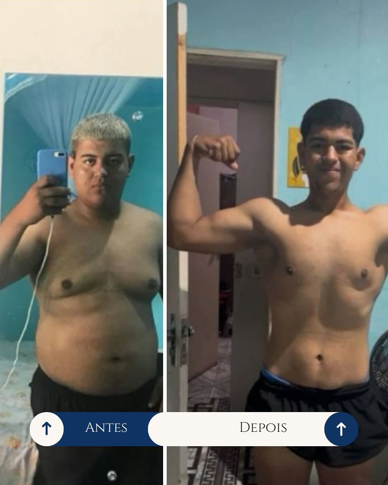

Por que e como emagrecer: motivações e métodos

A busca por um corpo saudável e uma vida mais equilibrada é um objetivo comum para muitas pessoas. Emagrecer pode ser um desafio, mas com as motivações certas e métodos adequados, é possível conquistar resultados reais de saúde e bem-estar.
O emagrecimento envolve mais do que a aparência: é uma medida de saúde capaz de prevenir doenças, melhorar a qualidade de vida e promover maior bem-estar físico e emocional.
As motivações que levam um paciente a buscar emagrecimento incluem promoção da saúde, recuperação da autoestima, aumento da disposição e prevenção de complicações médicas. Identificar esses objetivos é o primeiro passo para um tratamento individualizado.
- Acompanhamento nutricional personalizado: respeitando as necessidades individuais de cada paciente.
- Orientação médica especializada: avaliação de fatores hormonais, metabólicos e clínicos que influenciam o emagrecimento.
- Atividade física adequada: parte fundamental para saúde e segurança do paciente.
- Apoio contínuo na mudança de hábitos: foco em sono, controle de estresse e rotina equilibrada.
Nosso compromisso é oferecer suporte seguro, ético e eficiente, promovendo não apenas redução de peso, mas a conquista de um estilo de vida mais saudável e duradouro.

✨ Menos 34kg — Mais Saúde, Mais Vida! ✨
Hoje compartilhamos uma conquista de um paciente que, com dedicação e tratamento adequado, eliminou 34kg. O resultado trouxe mais energia, autoestima, qualidade de sono e bem-estar.
Emagrecer não é apenas estética é cuidar da saúde, do futuro e de quem você ama. Cada quilo perdido representa um passo rumo a uma vida mais leve, saudável e feliz.
Com orientação médica personalizada e apoio contínuo, a sua transformação também é possível.